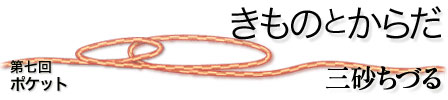

|  |
| 初めて海外に行ったのは、23歳になる前だった。かれこれ4半世紀前のことである。パキスタン航空でカラチを経由してケニアへむかう。安全とはいえないところに行っている、という意識はもちろんあった。十分注意するように、といわれて出発し、自分では十分すぎると感じるほど注意していたつもりなのに、結果としてやはり、たいそう甘かった。ナイロビの街に出るなり、初日に見事、バスですりにやられてしまったのだ。降りるべきバス停についたので、バスの座席を立ち上がり、降車ドアであるバスの前に向かって歩く間、それは数秒しかなかっただろう。バスを降りてふと、ウェストポケットを見ると、ファスナーがあいており、もっていたお金がきれいに全部抜かれている。パスポートなどは残っていたのだから、見事なプロの技であった。持ってきたお金は初日でなくしてしまったわけである。 今になって考えればよくわかる。だいたい、治安の悪いところに行くのに、ウェストポケットをつけて、しかも、そこに大切なものを入れる、という旅行初心者的行動をとっていた私がいけないのだ。さらに、公共交通機関に、そういうものを持って乗っていたという無防備さ。ここに大切なものをいれているから、どうぞ盗んでください、といいながら歩いていたようなものだったのだ。とにかくめだつところに貴重品をいれてはいけない。しかし、人間は学習できるから、すばらしい。最初で懲りたので、それからは、海外のちょっと危ないなあと思う街を歩くときは、ウェストポーチなど決して使わず、パスポートやトラベラーズチェック、外貨などは下着の上、腰まわりに直接つけておくような薄型の旅行用ウェストベルトに入れて、外からは目立たないようにして歩いていた。これはからだにふれているベルトなので、常に、「ある」ことが体感できるので安心だったが、スカートではベルトが下に落ちてしまう危険があるし、ズボンでは腰周りがもたつくので、あまり使い心地がよいものではなかった。やや治安がわるくなったとはいえ、日本にいるときは、ぼーっとしていても、まださほど実害に会うことはないが、海外ではやはりそれなりの注意をする必要があるので色々工夫してすごしていたものである。 最近、ブラジルに2週間出張した。ずっときもので生活しているのだが、24時間乗る飛行機ではさすがにちょっと帯が気になるかもしれないと思って、ゆったりしたパジャマまがいの洋服を着ていたが、ブラジルではきもので通した。海外できもので通す初めての経験である。まずは、とても便利でよかった。きものなら、海外で大切なものを持ち歩くことが苦にならないのだった。帯の前に何でも入れてしまえばよい。パスポートもお金もトラベラーズチェックもクレジットカードも。強盗にあったらしかたなく全部出すしかないのだろうが、さすがにスリは帯の中に手を入れる、ということはなかなか考え付かないのではあるまいか。大切なものを文字通り「身につけている」という安心感があって、とてもよかった。息をするたびに、大切なものが確認できる。飛行機にのるときの搭乗券も帯にはさんでおくと取り出しやすく、失くしにくい。帯の間からちょっとものを出すしぐさ、というのは悪くないように思う。ウェストベルトをごそごそするより、よほど格好がよい。 きものを着ると、手ぶらで出かける楽しさを味わえる、と思っている。特に帯揚げを使わない半幅帯をしているときなら、胸元にたくさんのポケット空間を持っているようなものだ。携帯電話、おさいふ、免許証、メモ帳、鍵、けっこうかさ高いものもはいる。そうか、背広を着ている人が、内ポケットにいろいろいれていて、手ぶらでも出かけられるのと同じ感じだな、と思う。帯板には、はじめから小物入れのポケットがついているものもあって、小銭や小さな鍵を収納するのに便利である。胸もとやたもとにハンカチやちり紙をいれると、きもののシルエットはちょっと美しさを失ってしまうが、便利でやめがたい。暑いときは、扇子を帯にさすのもなかなかかっこいい。礼装のとき、小さな扇子を形式的に帯にさすが、夏には、本当につかうための扇子を差しておけばよいのである。おたいこにした帯のうしろの部分にハンドタオルや手ぬぐいを入れておく、という人もいた。きものは、たくさんの隠しポケットに満ちている。 そういえば、治安の悪いブラジル・サンパウロの市内を歩くときは、小銭をポケットに入れて手ぶらで歩くように、と地元の人に忠告されていた。危ないところで手ぶらで歩く、というのは目立つものをもたない、ということで大切な安全対策なのだ。サンパウロは強盗、すりなども大変多い大都会なのだが、そこで何年か前、いつもきものに草履、番傘を日傘代わりにさし、サンパウロの目抜き通りを歩いている、という某商社の奥様がいらしたそうだ。あまりに目立って、かえって危ない目にあうことはなかったという。きもので海外ですごす、というのはやっぱり悪いことではなさそうだ。 三砂ちづる（みさご・ちづる） 疫学者 |